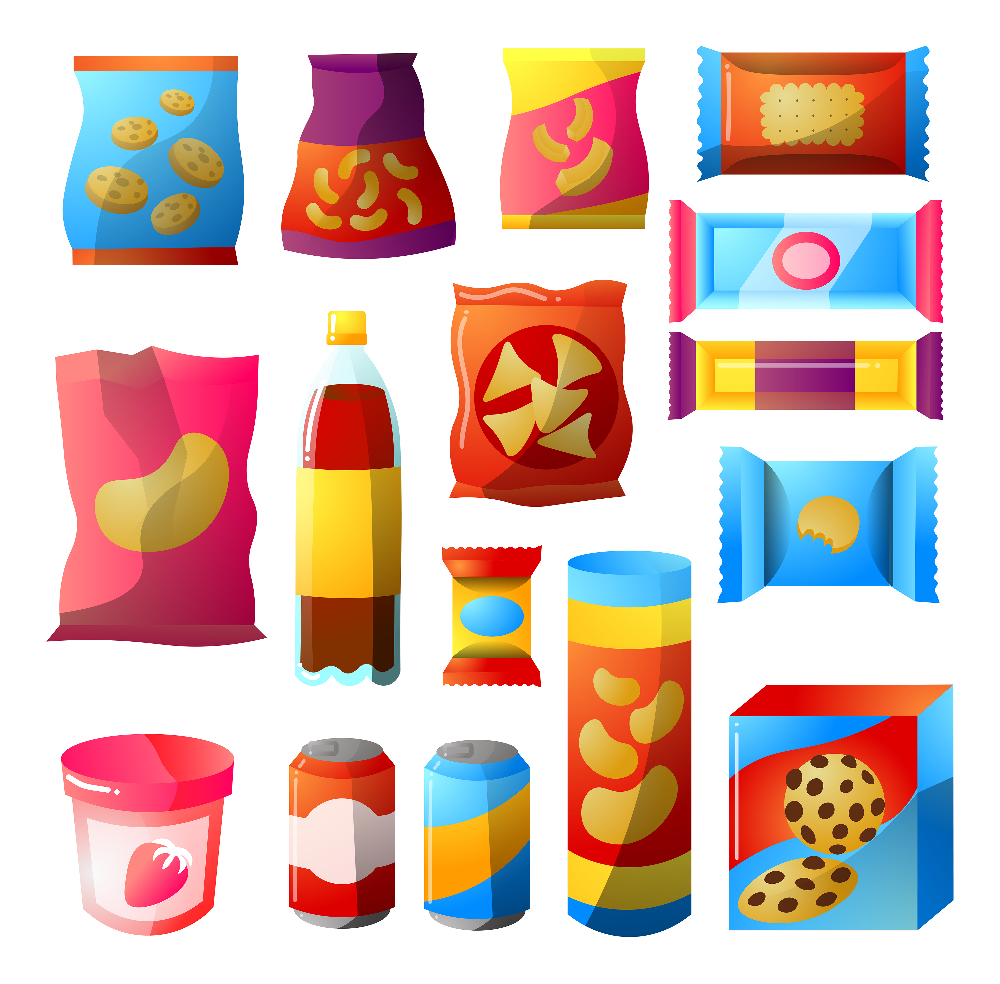

Preguntas frecuentes
¿Qué es Food-Facts?
Food-Facts es una plataforma que ofrece una base de datos nutricionales e información acerca de alimentos procesados, en donde se podrá consultar sobre sus valores nutricionales, los cuales serán mostrados de manera didáctica. Además, se podrá observar los riesgos a la salud por el consumo excesivo del producto seleccionado.

¿Qué alimentos procesados podré encontrar en Food-Facts
Podrá encontrar diversos alimentos procesados como galletas, jugos, cereales entre otros. Asimismo, podrá encontrar diferentes marcas de productos. Por otro lado, cada cierto se va a actualizar el catálogo de Food-Facts con más productos.
¿Qué tipo de suscripciones tiene Food-Facts?
Suscripción Básica
S/ 12,50
Esta suscripción te permite hacer consultas sobre los valores nutricionales de los alimentos procesados.
Suscripción Premium
S/ 18,50
Esta suscripción te permite hacer consultas sobre los valores nutricionales de los alimentos procesados. Además, podrá tener reportes sobre los riesgos a la salud del alimentos procesado seleccionado.